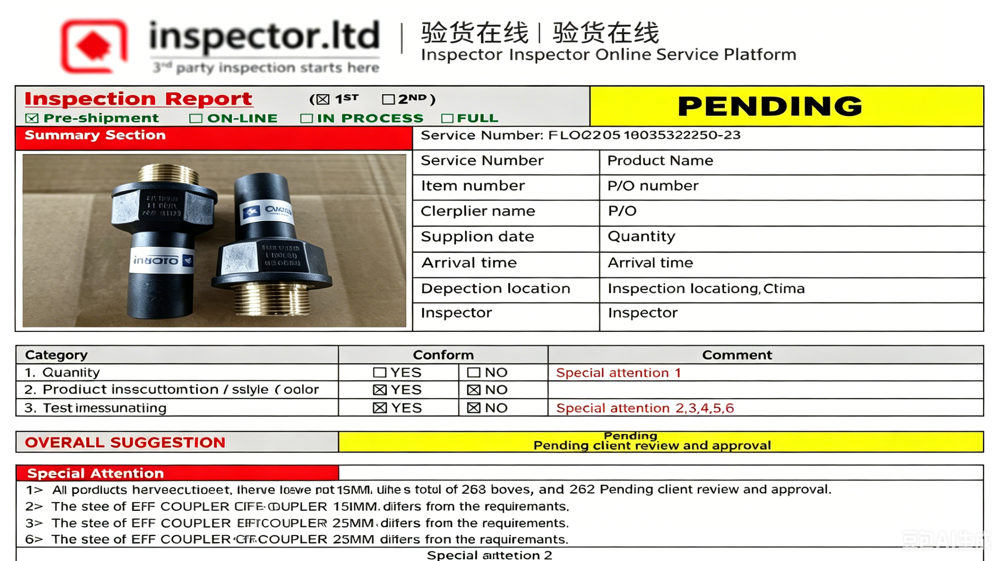

不同于传统采购代理驻厂跟进，我们采用"远程管理+第三方验证"模式，在保证质量的同时，为你节省成本、提高效率、扩大覆盖范围。
通过三重保障机制，我们在不派驻人员的情况下，确保产品质量和交付可靠性

第三方检验员直接到工厂验货，出具PDF检测报告，全程透明可追溯。
订单生产完成后，我们根据产品类型和出口目的地，预约合适的检测机构和时间。
检测员到工厂现场随机取样，确保样品具有代表性，全程拍照记录。
第三方检验员到工厂现场，按AQL标准对产品进行外观、尺寸、功能等检验。
2-3个工作日内出具原版检测报告（PDF），直接发送给您审阅。
2-3个工作日内出具原版检测报告（PDF），直接发送给您审阅。
2-3个工作日内出具原版检测报告（PDF），直接发送给您审阅。
中国检验认证集团，国内权威第三方检测机构
中国质量认证中心，提供产品检验与认证服务
各地产品质量监督检验所，按区域就近安排
检测完成后，您将直接收到检测机构出具的原始报告PDF，而非经过我们修改的版本。报告包含：
立即通知
我们在收到报告的第一时间通知您，并提供详细的不合格项说明。
协调返工
与工厂协商返工方案，必要时安排二次检测，费用由责任方承担。
重新出货
返工完成后再次检测，合格后方可安排出货，确保您收到的货物符合标准。
| 对比维度 | 传统驻厂代理 | ETC Sourcing轻资产模式 |
|---|---|---|
| 覆盖范围 | 单一产业带 | 全国五大产业带 |
| 品类能力 | 专注少数品类 | 机械到日用全品类 |
| 成本结构 | 高（养驻厂团队） | 低（按需调用资源） |
| 响应速度 | 依赖驻厂人员 | 远程+本地代理，更快 |
| 质量保障 | 自有质检（主观） | 第三方机构（客观权威） |
| 灵活性 | 人员固定 | 按项目调配最优资源 |